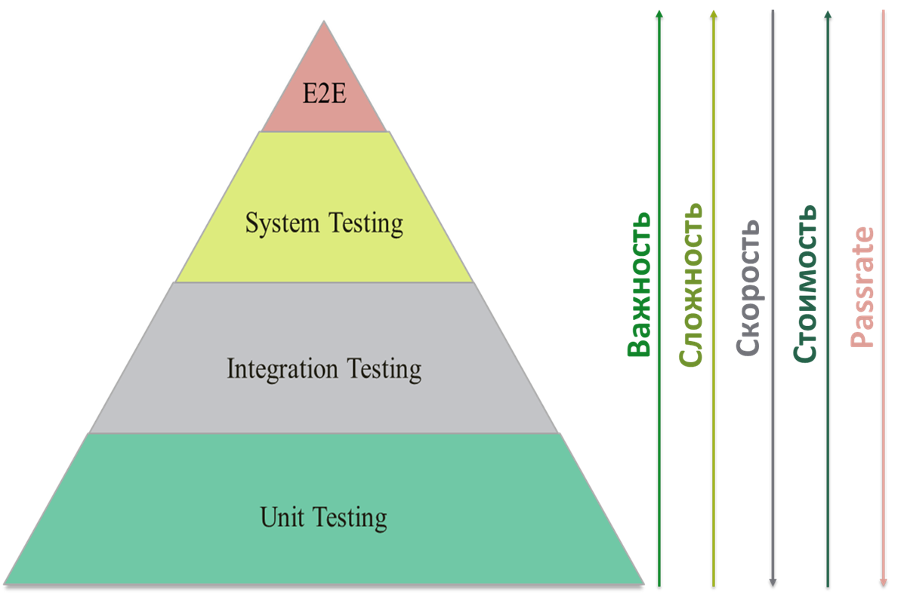

Виды и методы тестирования

Уровни тестирования
Юнит-тестирование (Unit Testing) — Проверка отдельных
компонентов программы (функций, методов, классов) на корректность
работы в изоляции.
- Рекомендуемое покрытие: 70–90%
- Критическую бизнес-логику (расчёты, алгоритмы).
- Условные ветвления (if/else, switch-case).
- Крайние случаи (edge cases).
- Выполняется разработчиками на этапе написания кода.
- Использует моки (mock-объекты) для изоляции тестируемого модуля.
- Покрывает крайние случаи (boundary values) и ошибки.
Компонентное тестирование — это тип функционального
тестирования, направленный на проверку отдельных независимых
частей системы (компонентов) в изоляции от других модулей.
Компонент — это автономная часть системы
Интеграционное тестирование — Проверка взаимодействия между
модулями, сервисами или внешними системами (БД, API).
- Рекомендуемое покрытие: 50–70%
- Взаимодействие между модулями (API ↔ БД, микросервисы).
- Внешние интеграции (платёжные шлюзы, SMTP).
- API-тестирование: Проверка запросов/ответов между серверами.
- Тестирование "снизу вверх" (Bottom-Up): Сначала тестируются низкоуровневые модули, затем их интеграция.
- Тестирование "сверху вниз" (Top-Down): Начинается с высокоуровневых модулей, заглушки (stubs) заменяют нижние уровни.
Системное тестирование — проверка всей системы на
соответствие требованиям.
- Рекомендуемое покрытие: 30–50%
- Сквозные сценарии в рамках одной системы (без внешних зависимостей).
- Конфигурации, права доступа.
- Работоспособность end-to-end сценариев (например, "регистрация → заказ → оплата").
- Соответствие SRS (Software Requirements Specification).
- Интеграция с внешними сервисами (например, платежными системами)
End-to-End (E2E) тестирование — это тип тестирования,
который проверяет работоспособность всей системы от начала до
конца, имитируя действия реального пользователя в максимально
приближенных к продакшену условиях.
- Рекомендуемое покрытие: 10–20%
- Ключевые пользовательские сценарии (регистрация, оплата).
- Критические пути (happy path + основные ошибки).
- Запускают полный сценарий (например: "пользователь регистрируется → добавляет товар в корзину → оплачивает → получает чек").
- Проверяют интеграцию всех компонентов (фронтенд, бэкенд, БД, внешние API).
- Выполняются в среде, максимально близкой к боевой (или прямо в продакшене, если используется Production Testing).
Приёмочное тестирование — проверка системы с точки зрения
пользователя/заказчика.
- UAT (User Acceptance Testing): Проводится заказчиком или конечными пользователями.
- Alpha/Beta-тестирование
- Критерии успеха: Соответствие бизнес-требованиям, Удовлетворенность пользователя.

Shift-Left Testing (Сдвиг влево) и Shift-Right Testing (Сдвиг вправо)
Shift-Left Testing (Сдвиг влево)
Суть: Перенос тестирования на более ранние этапы жизненного цикла разработки (SDLC), чтобы находить и исправлять дефекты как можно раньше.
- Раннее обнаружение багов → дешевле исправлять.
- Снижение рисков на поздних этапах.
- Улучшение коммуникации между разработчиками и тестировщиками.
- Более высокая скорость выпуска продукта.
Методы Shift-Left:
- Статическое тестирование (анализ кода, ревью требований)
- Модульное (Unit) и интеграционное тестирование (проверка отдельных компонентов)
- TDD (Test-Driven Development) – сначала тесты, потом код
- BDD (Behavior-Driven Development) – тесты на основе пользовательских сценариев
- Автоматизация тестирования на ранних этапах (CI/CD)
Shift-Right Testing (Сдвиг вправо)
Суть: Тестирование в продакшене или на поздних этапах, чтобы проверить, как система ведёт себя в реальных условиях.
- Выявление проблем, которые не проявляются в тестовой среде.
- Проверка производительности и отказоустойчивости под реальной нагрузкой.
- Быстрое получение фидбека от пользователей.
Методы Shift-Right:
- A/B-тестирование – сравнение двух версий функционала
- Canary-развертывание – постепенный rollout новой версии
- Chaos Engineering – намеренное создание сбоев для проверки устойчивости
- Мониторинг и сбор логов (Sentry, Datadog, ELK)
- Тестирование в продакшене (Production Testing)
Виды тестирования по целям и задачам
Функциональное — проверка функциональности системы согласно
требованиям.
Нефункциональное — проверка атрибутов, не связанных с
функциональностью: производительность, удобство, безопасность и
др.
Инсталляционное — проверка корректности установки и запуска
приложения.
Конфигурационное — проверка работы ПО при разных
конфигурациях и окружениях.
Совместимость — кросс-платформенное, кросс-браузерное,
мобильное тестирование.
GUI тестирование — проверка соответствия интерфейса
спецификациям.
Usability — проверка удобства использования продукта.
Интернационализация и локализация — проверка готовности к
разным языкам и культурам.
Безопасность — оценка защищённости программного продукта.
Доступность — пригодность для людей с ограниченными
возможностями.
Производительность — оценка поведения системы под
нагрузкой.
Нагрузочное и стресс-тестирование — работа при высоких и
экстремальных нагрузках.
Тестирование изменений
Тестирование нового функционала — проверка новых
возможностей продукта.
Регрессионное тестирование — проверка, что изменения не
сломали существующую функциональность.
По фазе разработки
Тестирование разработки — проводится во время разработки,
чтобы выявить максимум дефектов до релиза.
Приёмочное тестирование — проверка соответствия ожиданиям
пользователя/заказчика.
Тестирование сопровождения — проверка изменений и миграций
в уже работающей системе.
По приоритету выполнения
Дымовое тестирование — проверка самой главной
функциональности, без которой продукт не имеет смысла.
Критический путь — проверка функциональности, используемой
в повседневной деятельности.
Расширенное тестирование — проверка всей заявленной
функциональности, включая малозначимые функции.
По принципу работы с приложением
Позитивное тестирование — работа приложения при корректных
действиях пользователя.
Негативное тестирование — работа приложения при ошибочных
действиях и вводе некорректных данных.
По запуску кода
Статическое тестирование — проверка без запуска кода на
исполнение.
Динамическое тестирование — проверка с запуском кода на
исполнение.
По доступу к коду
Белый ящик — тестировщик имеет доступ к внутренней
структуре и коду приложения.
Чёрный ящик — тестировщик не имеет доступа к коду или не
использует его.
Серый ящик — комбинация методов белого и чёрного ящика.
По формализации
Тест-кейсы — тестирование по заранее подготовленным
тест-кейсам.
Чек-листы — тестирование по чек-листам.
Исследовательское и хаотическое — тестирование без
формальных сценариев, на основе опыта и интуиции.
Когда проводить смоук и регрессионное тестирование?
Смоук тестирование — быстрая проверка критических функций
после сборки или обновления.
Регрессионное тестирование — проверка, что новые изменения
не нарушили существующую функциональность.
Функциональное тестирование программного обеспечения
Функциональное тестирование это процесс проверки того, что
функции ПО работают в соответствии с заявленными требованиями. Оно
направлено на выявление дефектов в реализации функциональности, то
есть на то, отвечает ли система ожиданиям пользователей и требованиям
технической спецификации
Функциональное тестирование является одним из ключевых этапов в цикле разработки ПО, и его основная цель – убедиться, что каждая функция программного обеспечения выполняет свои задачи правильно и предсказуемо. В рамках функционального тестирования проверяется, как система реагирует на различные входные данные, правильно ли обрабатывает ошибки и взаимодействует с другими компонентами, а также соответствует ли ее поведение заданным требованиям.
Функциональное тестирование является одним из ключевых этапов в цикле разработки ПО, и его основная цель – убедиться, что каждая функция программного обеспечения выполняет свои задачи правильно и предсказуемо. В рамках функционального тестирования проверяется, как система реагирует на различные входные данные, правильно ли обрабатывает ошибки и взаимодействует с другими компонентами, а также соответствует ли ее поведение заданным требованиям.
Основные аспекты функционального тестирования:
- Проверка соответствия требованиям - Убедиться, что реализованная функциональность соответствует требованиям, изложенным в спецификации.
- Тестирование различных сценариев - Проверить работу системы в различных ситуациях и с разными входными данными, включая негативные сценарии (ошибочные данные, нештатные ситуации).
- Проверка пользовательского интерфейса - Убедиться, что элементы интерфейса работают корректно и соответствуют ожиданиям пользователей.(Работоспособность элементов, Поля формы должны корректно обрабатывать данные, Навигация)
- Проверка API - Убедиться в корректной работе интерфейсов программирования приложений (API), если они используются в системе (Корректность ответов на запросы (статус-коды, данные).)
- Проверка баз данных - Убедиться в корректном взаимодействии системы с базами данных, включая чтение, запись и изменение данных.